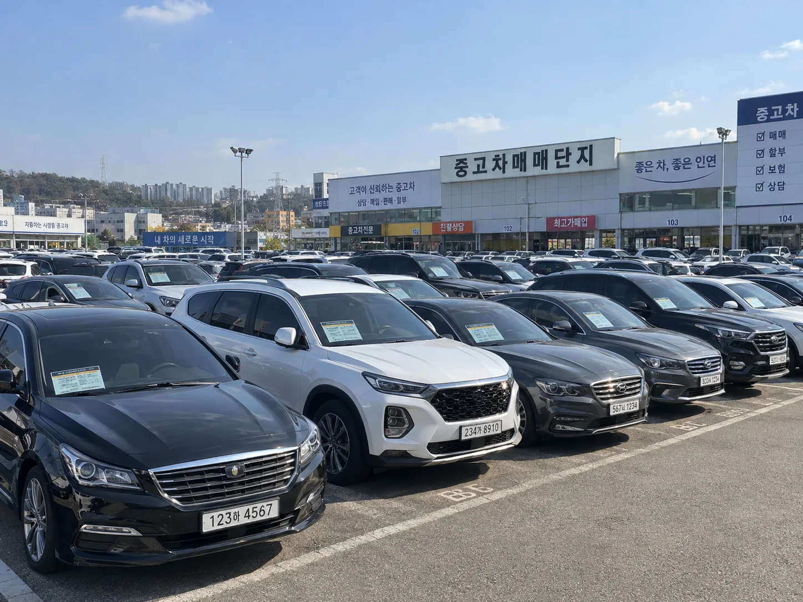
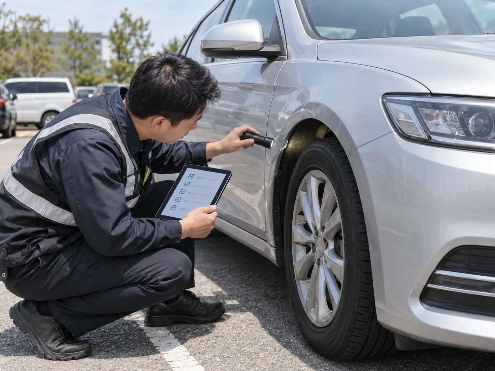
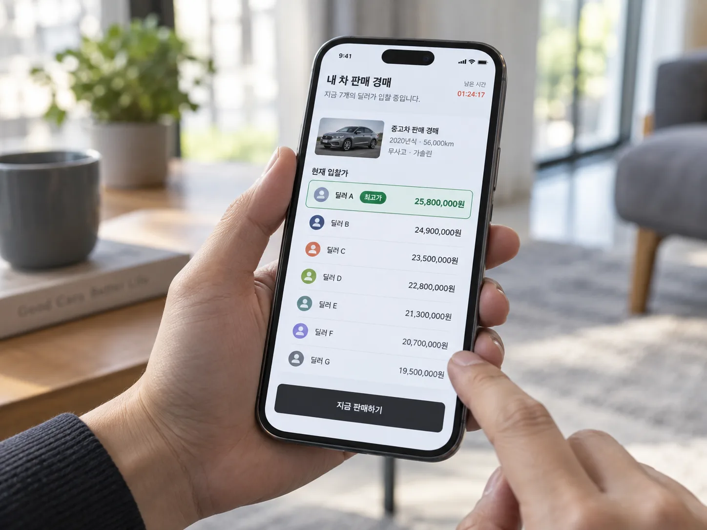

▲ 매매단지 딜러 매입은 여전히 가장 빠르고 익숙한 방법이지만, 최근엔 경매·견적 플랫폼과 비교하는 소비자가 늘고 있다 ⓒ CarPrism (AI 생성 이미지)
"어차피 딜러들이 다 후려치는 거 아니야?" 중고차를 팔아본 사람이라면 한 번쯤 품었을 의심이다. 실제로 최근 몇 년 사이 헤이딜러, 카닥, 첫차 같은 비대면 경매·견적 플랫폼이 빠르게 자리 잡으면서, 매매단지에 직접 차를 끌고 가지 않고도 "여러 딜러가 동시에 입찰"하는 구조로 판매하는 경우가 늘었다. 그런데 정작 이 방식이 실제로 더 높은 가격을 만들어주는지는 생각보다 단순하게 답하기 어렵다.
이 기사는 두 방식의 구조적 차이, 수수료, 실제 이용자들의 경험담, 그리고 차량 조건별 유불리를 최대한 실증적으로 정리했다. 다만 미리 밝혀둘 것이 있다. "딜러 매입가 대비 플랫폼이 정확히 몇 % 더 받는다"는 식의 통계는 공식적으로 발표된 적이 없다. 아래 내용 중 구체적 수치는 커뮤니티 후기·업계 자료에 근거한 것이며, 확인되지 않은 부분은 명확히 그렇게 표시했다.
1. 구조부터 다르다 — 매매단지 딜러 매입 vs 플랫폼 경매
두 방식은 겉보기엔 둘 다 "딜러에게 판다"는 점에서 같지만, 가격이 결정되는 메커니즘이 근본적으로 다르다. 매매단지에서는 보통 딜러 한두 명과 얼굴을 맞대고 흥정하는 구조인 반면, 플랫폼은 수십~수천 명의 딜러가 동시에 온라인으로 입찰가를 제시하는 구조다.
| 구분 | 매매단지 딜러 매입 | 경매·견적 플랫폼 |
|---|---|---|
| 가격 결정 방식 | 딜러 1~2인과 대면 흥정 | 다수 딜러 동시 입찰(경매) 또는 앱 기반 즉시 견적 |
| 경쟁 구도 | 제한적 — 직접 여러 딜러를 순회해야 비교 가능 | 플랫폼 안에서 자동으로 경쟁 발생 |
| 현금화 속도 | 계약 즉시~당일, 매우 빠름 | 당일~수 영업일(플랫폼·차량 상태 따라 상이) |
| 가격 투명성 | 딜러가 산정 근거를 자세히 공개하지 않는 경우가 많음 | 입찰 내역이 화면에 표시돼 상대적으로 투명 |
| 수수료 | 별도 표시 없이 매입가에 딜러 마진이 이미 반영됨 | 판매자 대상 수수료는 없는 경우가 일반적, 딜러 측이 부담 |

▲ 플랫폼 경매형 서비스는 전문 평가사가 먼저 차량 상태를 진단한 뒤 그 결과를 바탕으로 딜러들이 입찰하는 방식을 쓰기도 한다 ⓒ CarPrism (AI 생성 이미지)
📍 딜러 매입은 '즉시 현금화'가 최대 장점
매매단지 딜러 매입의 강점은 속도와 확실성이다. 차를 끌고 가서 그 자리에서 계약하고 바로 돈을 받을 수 있다. 명의이전·서류 처리까지 딜러가 한 번에 처리해주는 경우가 많아, 당장 목돈이 필요하거나 처분이 급한 상황에는 여전히 유효한 선택지다.
2. 수수료는 정말 '공짜'일까 — 플랫폼별 구조 뜯어보기
헤이딜러, 카닥, 첫차 등 주요 플랫폼은 공통적으로 판매자에게 별도의 수수료를 청구하지 않는다고 안내한다. 대신 낙찰받은 딜러가 플랫폼 측에 수수료를 지급하는 구조로 알려져 있다. 헤이딜러 공식 블로그에서도 판매자 입장에서는 수수료 부담이 없다는 점을 강조하고 있다.
✅ 주요 플랫폼 방식 차이 (공식 안내 기준)
· 헤이딜러(경매형) — 전국 딜러가 온라인으로 동시 입찰, 최고가 낙찰. '헤이딜러 제로'는 전문 평가사가 직접 방문 진단 후 경매에 올려 현장 감가 없이 입찰가 그대로 지급한다고 안내
· 카닥·첫차 등(견적 비교형) — 여러 딜러·매입업체의 견적을 앱에서 한 번에 비교, 판매자가 원하는 조건을 직접 선택
· 공통점 — 판매자 대상 수수료 없음을 표방, 낙찰 후 딜러가 직접 방문 또는 지정 장소에서 인수·정산
· 주의할 점 — '감가 없음'을 내세우는 상품일수록 사전 진단의 정확도가 중요하다. 진단 당시 고지하지 않은 결함이 나중에 발견되면 정산 단계에서 재조정될 수 있음
플랫폼별 정확한 수수료·정산 정책은 이용 시점마다 달라질 수 있으므로, 판매 전 반드시 앱 또는 공식 홈페이지에서 최신 안내를 확인하는 것이 좋다. 헤이딜러 홈페이지에서 확인 가능

▲ 경매형 플랫폼은 여러 딜러의 입찰가가 실시간으로 화면에 표시돼 흥정 과정보다 비교적 투명하다는 평가를 받는다 ⓒ CarPrism (AI 생성 이미지)
3. 실제로 얼마나 차이 났나 — 이용자 후기로 본 사례들
중요한 전제부터 말해두면, "플랫폼이 항상 더 높다" 혹은 "딜러가 항상 더 낮다"는 식의 일반화는 실제 후기들과 맞지 않는다. 클리앙, 앱 리뷰 등에 올라온 경험담을 보면 결과가 케이스마다 갈린다.
✅ 커뮤니티·후기에서 확인되는 사례 유형
· 플랫폼이 더 유리했던 경우 — 헤이딜러 경매에 올렸더니 여러 딜러가 경쟁 입찰해 매매단지에서 제시받은 금액보다 높은 가격에 낙찰됐다는 후기가 다수 확인됨
· 딜러(또는 다른 채널)가 더 유리했던 경우 — 헤이딜러·케이카·오토벨 등에서 견적을 받아 비교했는데 오히려 특정 업체(예: 케이카)가 앱 최고가보다 더 높은 금액을 제시했다는 후기도 존재
· 개인 직거래가 가장 높았던 경우 — 엔카 등에서 개인 간 직거래로 앱 최고 입찰가보다 수십만 원 더 받았다는 사례도 있음(단, 개인거래는 사기·명의이전 리스크를 판매자가 직접 감당해야 함)
· 딜러 매입의 전형적 패턴 — 방문 딜러가 처음엔 높은 금액을 제시했다가 현장에서 이런저런 감가 사유를 들어 금액을 깎으려 한다는 후기가 반복적으로 나타남
📍 "몇 % 더 받는다"는 공식 통계는 존재하지 않는다
언론·업계 자료를 통해 대략적인 시세 대비 매입가 범위(예: 시세 대비 -3~-12% 수준)가 언급되는 경우는 있지만, 이는 매체·업체별 추정치이지 정부나 소비자 기관이 검증한 공식 통계가 아니다. 차량의 연식·주행거리·사고이력·지역·판매 시점의 시세 변동에 따라 결과가 크게 달라지기 때문에, "딜러보다 플랫폼이 정확히 몇 % 더 받는다"는 단정적인 수치는 신뢰하지 않는 것이 안전하다. 반드시 본인 차량으로 직접 여러 곳에서 견적을 받아 비교하는 것이 유일하게 확실한 방법이다.
4. 딜러는 왜, 어떻게 값을 깎으려 하나 — 매입 구조의 이면
매매단지 딜러의 매입가에는 이미 그들의 마진 구조가 반영돼 있다. 커뮤니티에 공유된 업계 경험담에 따르면, 딜러는 차량을 매입한 뒤 이전등록비·상사 내 주차비 등 부대비용과 경정비·광택 등 상품화 비용을 들여 되팔 준비를 하고, 여기에 통상 도매가 대비 7~10% 안팎의 마진을 붙여 소매가를 형성한다고 알려져 있다.
| 요인 | 매입가에 미치는 영향 |
|---|---|
| 상품화 비용 | 경정비·광택·소모품 교체 등 재판매 준비 비용을 매입가에서 미리 차감 |
| 회전율 | 딜러가 "이 차종은 잘 안 팔린다"고 판단하면 매입가를 낮게 제시 |
| 흥정 여지 | 현장 대면 협상 특성상 감가 사유를 들어 최초 제시가보다 낮추려는 시도가 흔함 |
| 즉시 현금화 프리미엄 | 판매자가 급하게 처분해야 하는 상황일수록 딜러 협상력이 커짐 |
반대로 플랫폼 경매는 딜러 개인의 협상력이 아니라 다수 딜러 간 경쟁이 가격을 밀어올리는 구조다. 특정 딜러가 낮은 가격을 부르더라도 다른 딜러가 더 높은 입찰가를 제시하면 그쪽으로 낙찰되기 때문에, 이론적으로는 판매자에게 더 유리한 구조로 설계돼 있다.
5. 소비자 피해·분쟁 통계로 보는 중고차 거래의 위험
어느 방식을 택하든 중고차 거래 자체의 리스크는 존재한다. 한국소비자연맹이 1372소비자상담센터 접수 건을 분석한 결과에 따르면 중고차 관련 소비자 상담은 매년 늘어나는 추세다. 2026년 상반기 상담 건수는 3,190건으로 전년 동기(2,157건) 대비 47.9% 증가했다.
| 피해 유형 | 비중 |
|---|---|
| 성능·상태점검기록부 불일치·정보 미고지 | 43.3% |
| 계약 해제·해지 거부, 대금 미환급 | 20.8% |
| 사후관리 미이행 | 16.7% |
| 성능·품질 하자 | 13.8% |
| 부당 수수료, 매매·명의이전 절차 분쟁 | 5.5% |
📍 이 통계는 주로 '구매' 관련 분쟁이라는 점에 유의
위 통계는 중고차를 구매한 소비자들의 상담·피해 사례가 다수를 차지한다. 이 기사의 주제인 '판매' 과정에서의 딜러-플랫폼 간 가격 분쟁을 별도로 집계한 공식 통계는 확인되지 않았다. 다만 매매·명의이전 절차 분쟁이나 대금 미환급 항목은 판매자 입장에서도 참고할 만하다 — 정산이 지연되거나 명의이전이 늦어지는 사례는 딜러 매입, 플랫폼 매입 양쪽 모두에서 발생할 수 있으므로, 어느 경로를 택하든 정산 시점과 명의이전 완료 여부를 반드시 확인해야 한다.
6. 내 차라면 어느 쪽이 유리할까 — 조건별 정리
결국 이 질문의 답은 "내 차가 어떤 차인가"에 크게 좌우된다. 업계 관계자와 후기를 종합하면 대략 다음과 같은 경향이 나타난다.
▲ 여러 곳에서 견적을 받아 나열해 비교하는 것 자체가 가격을 끌어올리는 가장 확실한 방법이라는 점은 모든 전문가 의견이 일치한다 ⓒ CarPrism (AI 생성 이미지)
| 차량 조건 | 상대적으로 유리한 경향 | 이유 |
|---|---|---|
| 최근 연식·무사고·인기 준중형 SUV | 플랫폼 경매 | 다수 딜러가 재판매 자신감을 갖고 적극 입찰, 경쟁이 가격을 끌어올림 |
| 수입차·프리미엄 세그먼트 | 플랫폼 경매(단, 전문성 있는 곳 확인 필요) | 전문 딜러 간 입찰 경쟁이 시세에 가깝게 형성되는 경향 |
| 10년 이상 노후차·단종 비인기 차종 | 매매단지 직접 매각 또는 지인·직거래 | 플랫폼 입찰 자체가 저조하거나 유찰될 가능성, 딜러가 폐차·부품용으로 개별 협상하는 경우가 많음 |
| 사고이력·침수 등 하자 있는 차량 | 매매단지에서 사정을 설명하고 직접 협상 | 플랫폼은 사전 고지 불일치 시 정산 재조정 리스크가 있어, 상태를 정확히 아는 딜러와의 직접 협상이 오히려 분쟁 소지가 적을 수 있음 |
| 당장 현금이 급한 경우 | 매매단지 즉시 매입 | 계약 즉시 현금화 가능, 플랫폼은 낙찰 후 정산까지 하루 이상 걸릴 수 있음 |
✅ 어느 쪽을 택하든 공통으로 지켜야 할 원칙
· 반드시 2곳 이상에서 견적을 비교할 것 — 플랫폼끼리 비교하든, 플랫폼과 매매단지를 비교하든 마찬가지
· 딜러가 현장에서 감가를 시도하면 구체적 사유를 문서나 사진으로 요구할 것
· 플랫폼 이용 시 사전 고지 항목(사고이력·침수·주요 부품 교체 이력)을 빠짐없이 정확히 입력할 것 — 나중에 발견되면 정산가가 낮아질 수 있음
· 명의이전·대금 정산이 완료됐는지 서류로 반드시 확인할 것
· "단정적으로 몇 % 더 받는다"는 광고 문구보다는 본인 차량 실제 견적을 최우선으로 판단할 것
7. 요약
매매단지 딜러 매입은 빠르고 확실하지만 흥정력이 판매자에게 불리하게 작용하기 쉬운 구조이고, 경매·견적 플랫폼은 다수 딜러의 경쟁 입찰로 상대적으로 투명한 가격을 기대할 수 있지만 차종·상태에 따라 입찰이 저조할 수 있다.
커뮤니티 후기를 종합하면 최근 연식의 인기 차종·무사고 차량은 플랫폼 경매가 유리했다는 사례가 많고, 노후차·비인기 차종·하자 있는 차량은 매매단지 직접 매각이나 개인 직거래가 나았다는 사례도 확인된다. 다만 "딜러보다 플랫폼이 정확히 몇 % 더 받는다"는 공식 통계는 존재하지 않으므로, 이런 일반화된 수치를 그대로 믿기보다는 본인 차량으로 직접 여러 채널의 견적을 받아 비교하는 것이 가장 확실한 방법이다.
중고차 관련 소비자 상담이 매년 늘고 있는 만큼, 어느 방식을 택하든 사전 고지·정산 시점·명의이전 완료 여부를 문서로 꼼꼼히 확인하는 습관이 결국 가장 큰 손해를 막는 방법이다.